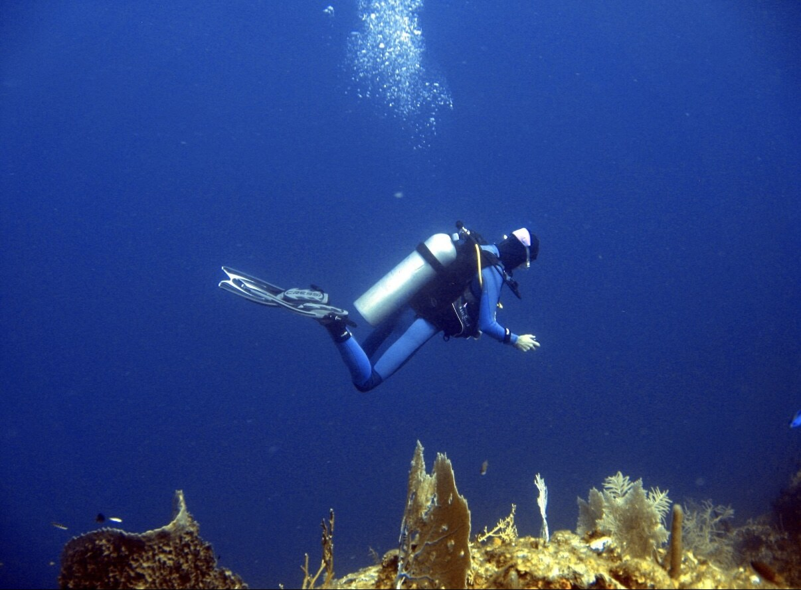
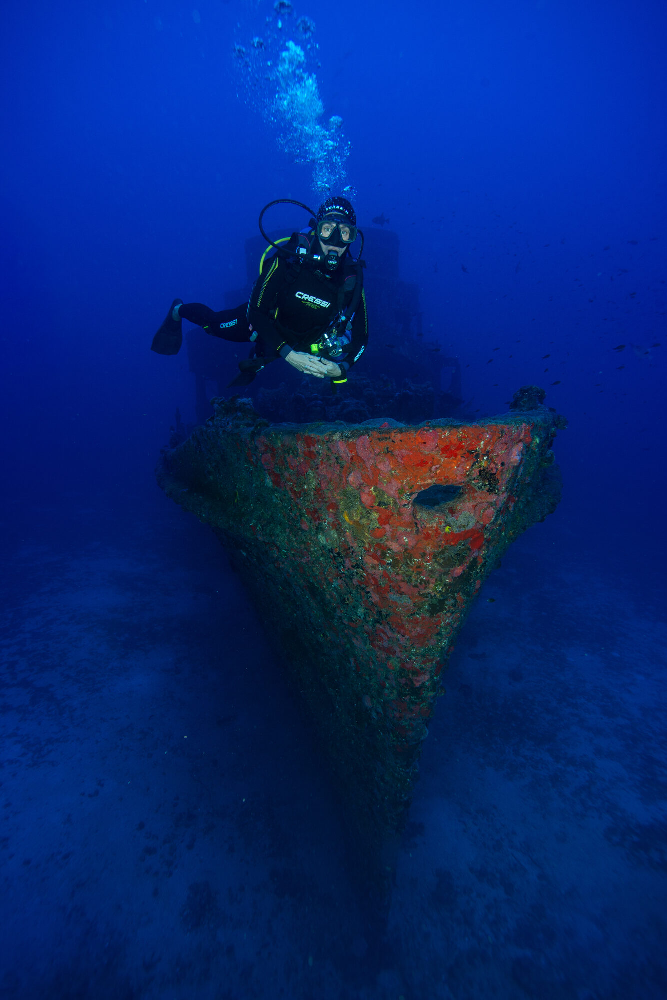
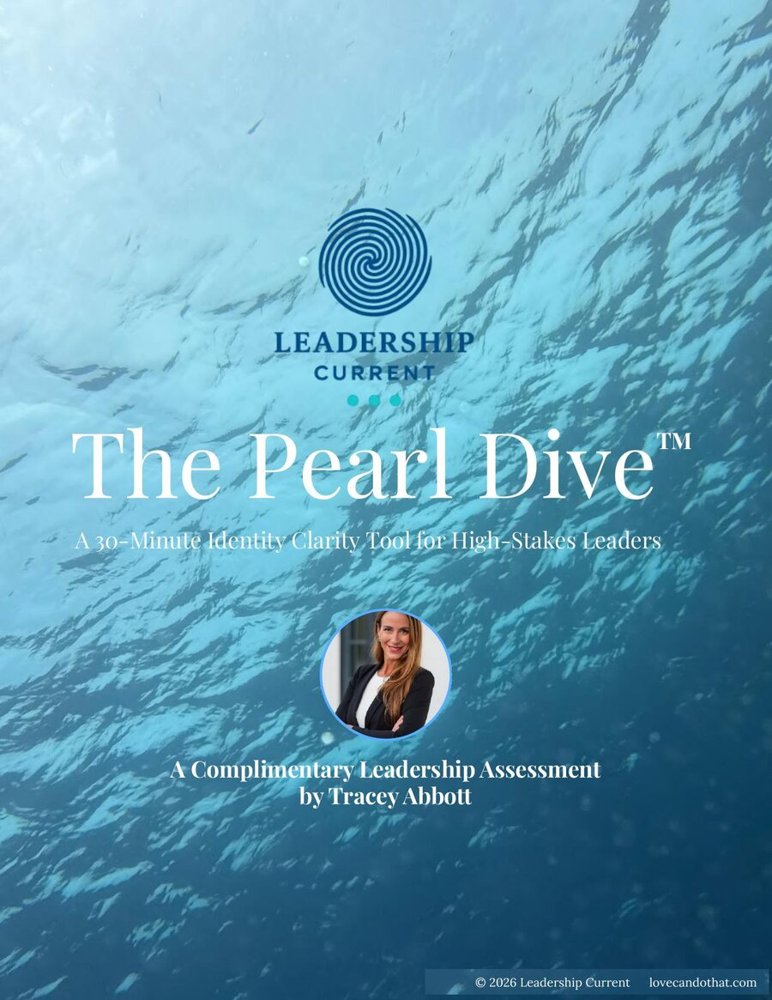

Roatán, Honduras
Half the year I am on this island. It is where I learned the thing I use most in the room.

The water
The ocean taught me to stop controlling. To let the current carry me somewhere I did not plan. To be a kid again, full of wonder and play and exploration, at an age when most people have quietly agreed to stop.
It also taught me the thing I use most in my actual work. When someone else is in trouble, your job is not to fix it fast. I can hold space as deep as the bottom of the ocean for people, without ever needing to fix it.
My best friend calls me a pearl diver into other people. It is true above the surface and below it.

I can hold space as deep as the bottom of the ocean for people.
What diving taught me about sitting with people
The house
I split my time between the Hudson Valley woods and this island. Different quiet in each. One is trees and cold and long dark evenings. The other is salt on everything, and a boat, and a door that stays open.
People find their way here. That has happened without me planning it, which is usually how the good things start.
What that becomes now has a name. I lead small leadership retreats here, built around the same water that taught me how to stay calm when someone else is not. The medicine stays where it is licensed, at a proper service center, exactly the way the law requires. What happens on this island is the integration. Diving, mostly. Long mornings with no agenda. The kind of processing that moves easier in water than in a conference room.
If your team already knows the room and is ready to go somewhere quieter with it, this is where we would go.
Take something with you
You do not have to work with me to use this. It is the assessment I built for the leaders I coach, and it is free.

Most people try to become themselves by adding. More skills, more credentials, more strategy. This does the opposite. It is a process of intentional subtraction, and what is left at the end is the thing you have been carrying the whole time.
Print it in color, step away from screens, and let pen meet paper. The truth lives offline.
Love can do that.
The licensed work happens elsewhere. This page is just where I live, and what the water taught me.
Back to the work